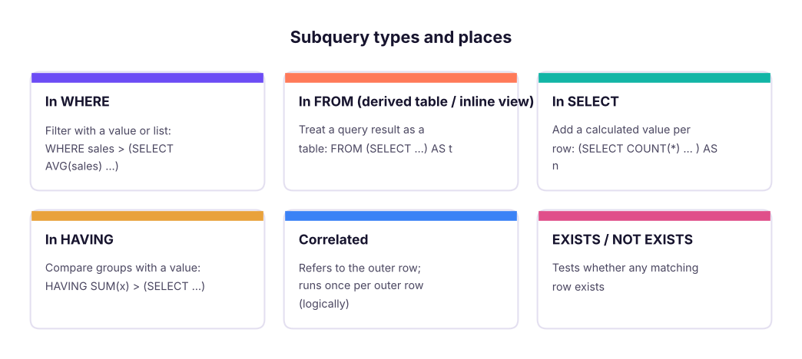

Put queries inside queries. Use scalar subqueries, multi-row subqueries with IN, ANY and ALL, correlated subqueries, EXISTS and NOT EXISTS, and derived tables (inline views) to answer questions that one level of SELECT cannot, and learn when a join, CTE or window function is better.
● SQL classes 4–5✦ SQL Server 2022, 2026Intermediate⏱ 120 min
A subquery (inner query, nested query) is a SELECT written inside another statement, in brackets. The outer query uses its result.

Where subqueries can appear and what they return.
By what it returns
Example
Used with
Scalar (one value)
(SELECT AVG(sales) FROM superstore)
=, >, < … or as a column
Multi-row (one column, many rows)
(SELECT customer_id FROM orders WHERE …)
IN, NOT IN, ANY, ALL, EXISTS
Table (many columns and rows)
(SELECT region, SUM(sales) … GROUP BY region)
FROM as a derived table
Scalar subqueries
"Which order lines are above the average line value?"
SQL
SELECTCOUNT(*) AS lines_above_average,
(SELECTROUND(AVG(sales), 0) FROM superstore) AS average_line_sales
FROM superstore
WHERE sales > (SELECTAVG(sales) FROM superstore);
Result
lines_above_average
average_line_sales
1603
31,854
1 rows × 2 columns
The inner query runs first and returns one number; the outer query compares each row with it. You cannot write WHERE sales > AVG(sales) directly, because aggregates are not allowed in WHERE (Lesson 5's processing order).
"Show each region's sales and its share of the grand total":
SQL
SELECT region,
ROUND(SUM(sales), 0) AS sales,
ROUND(100.0 * SUM(sales) / (SELECTSUM(sales) FROM superstore), 1) AS pct_of_total
FROM superstore
GROUPBY region
ORDERBY sales DESC;
Result
region
sales
pct_of_total
South
53,952,769
26.8
West
51,958,521
25.8
North
49,018,161
24.3
East
46,484,119
23.1
4 rows × 3 columns
Multi-row subqueries: IN, NOT IN, ANY, ALL
"Orders from customers in the Corporate segment" (without a join):
SQL
SELECTCOUNT(*) AS corporate_orders
FROM orders
WHERE customer_id IN (SELECT customer_id FROM customers WHERE segment = 'Corporate');
Result
corporate_orders
955
1 rows × 1 columns
"Employees earning more than every employee in HR" and "more than at least one Sales manager":
SQL
SELECTCOUNT(*) AS earn_more_than_all_hr
FROM employees
WHERE monthly_income > ALL (SELECT monthly_income FROM employees WHERE department = 'HR');
Result
earn_more_than_all_hr
4
1 rows × 1 columns
SQL
SELECTCOUNT(*) AS earn_more_than_some_sales_manager
FROM employees
WHERE monthly_income > ANY (SELECT monthly_income FROM employees WHERE job_title = 'Sales Manager');
Result
earn_more_than_some_sales_manager
745
1 rows × 1 columns
Operator
Meaning
Equivalent
> ALL (…)
Greater than every value
> (SELECT MAX(…))
> ANY (…) / > SOME (…)
Greater than at least one value
> (SELECT MIN(…))
= ANY (…)
Equal to one of the values
IN (…)
<> ALL (…)
Different from every value
NOT IN (…)
Correlated subqueries
A correlated subquery refers to a column of the outer query, so its result changes for every outer row.
"Which employees earn more than the average of their own department?"
SQL
SELECT e.emp_id, e.department, e.job_title, e.monthly_income
FROM employees AS e
WHERE e.monthly_income > (SELECTAVG(e2.monthly_income)
FROM employees AS e2
WHERE e2.department = e.department) -- refers to the outer rowORDERBY e.monthly_income DESC;
Result
emp_id
department
job_title
monthly_income
E00210
R&D
Research Director
218417
E00519
Finance
Finance Manager
209833
E00328
Operations
Operations Manager
202750
E01187
IT
Support Engineer
196167
E01094
HR
HR Manager
194917
E01473
IT
Tech Lead
194500
E00439
IT
Tech Lead
193917
E00580
R&D
Research Director
188083
638 rows × 4 columns (first 8 shown)
Conceptually, for each employee e, SQL computes the average of e's department and compares. Optimisers usually rewrite this efficiently, but on large tables a window function (Lesson 12: AVG(…) OVER (PARTITION BY department)) or a join to a derived table is often clearer and faster.
"Latest order of each customer" (a classic):
SQL
SELECT o.customer_id, o.order_id, o.order_date
FROM orders AS o
WHERE o.order_date = (SELECTMAX(o2.order_date)
FROM orders AS o2
WHERE o2.customer_id = o.customer_id)
ORDERBY o.customer_id;
Result
customer_id
order_id
order_date
C0001
IN-2025-02263
2025-04-09
C0002
IN-2025-02871
2025-10-21
C0003
IN-2025-02642
2025-08-18
C0004
IN-2025-02344
2025-05-10
C0005
IN-2025-02982
2025-11-12
C0006
IN-2025-02960
2025-11-08
793 rows × 3 columns (first 6 shown)
EXISTS and NOT EXISTS
EXISTS (subquery) is TRUE if the subquery returns at least one row. It stops at the first match, and the columns it selects do not matter (SELECT 1 is conventional).
"Customers who bought at least one Copier":
SQL
SELECTCOUNT(*) AS customers_who_bought_copiers
FROM customers AS c
WHEREEXISTS (SELECT1FROM orders AS o
JOIN order_items AS oi ON oi.order_id = o.order_id
JOIN products AS p ON p.product_id = oi.product_id
WHERE o.customer_id = c.customer_id
AND p.sub_category = 'Copiers');
Result
customers_who_bought_copiers
343
1 rows × 1 columns
"Customers who have never ordered" (anti-join, compare with Lesson 8):
SQL
SELECTCOUNT(*) AS customers_without_orders
FROM customers AS c
WHERENOTEXISTS (SELECT1FROM orders AS o WHERE o.customer_id = c.customer_id);
Result
customers_without_orders
15
1 rows × 1 columns
Why NOT EXISTS is safer than NOT IN
SQL
WITH a AS (SELECT1AS id UNIONALLSELECT2UNIONALLSELECT3),
b AS (SELECT2AS id UNIONALLSELECTNULL)
SELECT
(SELECTCOUNT(*) FROM a WHERE id NOTIN (SELECT id FROM b)) AS not_in_rows,
(SELECTCOUNT(*) FROM a WHERENOTEXISTS (SELECT1FROM b WHERE b.id = a.id)) AS not_exists_rows;
Result
not_in_rows
not_exists_rows
0
2
1 rows × 2 columns
NOT IN returns 0 rows because b contains a NULL: 3 NOT IN (2, NULL) means 3 <> 2 AND 3 <> NULL, which is UNKNOWN. NOT EXISTS correctly returns 2 rows (1 and 3). Prefer NOT EXISTS, or add WHERE id IS NOT NULL inside the NOT IN subquery.
Derived tables (inline views)
A subquery in FROM acts as a temporary table for the rest of the query. It must have an alias. Derived tables are the standard way to aggregate first, then filter, join or aggregate again.
"Average order value by segment" requires two levels: first total each order, then average the orders.
SQL
SELECT segment,
COUNT(*) AS orders,
ROUND(AVG(order_total), 0) AS avg_order_value
FROM (
SELECT o.order_id, c.segment, SUM(oi.sales) AS order_total -- level 1: one row per orderFROM orders AS o
JOIN customers AS c ON c.customer_id = o.customer_id
JOIN order_items AS oi ON oi.order_id = o.order_id
GROUPBY o.order_id, c.segment
) AS order_totals -- level 2: average of ordersGROUPBY segment
ORDERBY avg_order_value DESC;
Result
segment
orders
avg_order_value
Consumer
1554
63,451
Home Office
691
63,237
Corporate
955
61,899
3 rows × 3 columns
If you averaged oi.sales directly, you would get the average line value, not the average order value: a frequent interview trap.
"Cities whose 2025 sales beat their 2024 sales", using two derived tables joined together:
SQL
SELECT a.city, ROUND(a.sales, 0) AS sales_2024, ROUND(b.sales, 0) AS sales_2025,
ROUND(100.0 * (b.sales - a.sales) / a.sales, 1) AS growth_pct
FROM (SELECT city, SUM(sales) AS sales FROM superstore WHEREYEAR(order_date) = 2024GROUPBY city) AS a
JOIN (SELECT city, SUM(sales) AS sales FROM superstore WHEREYEAR(order_date) = 2025GROUPBY city) AS b
ON b.city = a.city
WHERE b.sales > a.sales
ORDERBY growth_pct DESC;
Result
city
sales_2024
sales_2025
growth_pct
Pune
4,469,290
8,808,243
97.1
Jaipur
2,381,435
4,387,920
84.3
Bengaluru
3,955,891
5,909,257
49.4
Bhubaneswar
3,241,529
4,715,977
45.5
Chennai
4,306,703
6,192,082
43.8
Guwahati
3,063,023
4,156,269
35.7
Kolkata
4,204,948
5,388,829
28.2
Kochi
4,419,418
5,550,394
25.6
Indore
4,663,519
5,766,524
23.7
Ahmedabad
3,655,966
4,499,715
23.1
Chandigarh
3,384,407
3,711,620
9.7
Patna
4,459,339
4,649,126
4.3
12 rows × 4 columns
NoteNested (ordinary) subqueries vs inline views
A subquery in WHERE that does not refer to the outer query is an ordinary (nested) subquery: it runs once. A subquery in FROM is an inline view (derived table). One that refers to the outer row is correlated. In class these were introduced as inline views and ordinary subqueries; the next step is the CTE (Lesson 13), which is a named, more readable inline view.
Subqueries in SELECT
A scalar subquery in the column list adds a per-row value:
SQL
SELECT c.customer_id, c.customer_name,
(SELECTCOUNT(*) FROM orders AS o WHERE o.customer_id = c.customer_id) AS order_count,
(SELECTMAX(o.order_date) FROM orders AS o WHERE o.customer_id = c.customer_id) AS last_order
FROM customers AS c
ORDERBY order_count DESC, c.customer_id;
Result
customer_id
customer_name
order_count
last_order
C0219
Reyansh Verma
10
2025-04-10
C0396
Saanvi Patel
10
2025-07-18
C0069
Isha Verma
9
2025-10-04
C0110
Riya Das
9
2025-12-07
C0271
Meera Khan
9
2025-12-26
C0291
Meera Rao
9
2025-02-04
800 rows × 4 columns (first 6 shown)
Each correlated scalar subquery runs per customer. For many such columns, a single LEFT JOIN to an aggregated derived table is usually faster.
Choosing the right tool
Need
Good options
Compare with an overall aggregate
Scalar subquery, or window function
Filter by membership in another table
IN, EXISTS, or JOIN
Rows with no match
NOT EXISTS (safest), LEFT JOIN … IS NULL, EXCEPT
Compare with the row's own group
Correlated subquery, or AVG() OVER (PARTITION BY …)
Aggregate in two steps
Derived table or CTE
Reuse the same subquery several times
CTE (Lesson 13)
Summary
Key takeaways
Subqueries are queries in brackets inside another query; they can return a value, a list or a table.
Scalar subqueries compare with or display a single value (e.g. the overall average).
IN, ANY, ALL work with multi-row subqueries; > ALL = greater than the max.
Correlated subqueries reference the outer row (e.g. above the employee's department average).
EXISTS / NOT EXISTS test for matching rows; prefer NOT EXISTS over NOT IN when NULLs are possible.
Derived tables (inline views) aggregate first, then filter/join; they need an alias.
Quick quiz6 questions · tap an answer to check it
1. Why does WHERE sales > AVG(sales) fail?
Answer: B. WHERE runs before aggregation, so compute the average in a subquery.
2. A subquery in FROM must have:
Answer: B. Derived tables must be named.
3.WHERE x NOT IN (SELECT y FROM t) returns no rows even though some x values are missing from t. Most likely cause?
Answer: B. One NULL in the list makes every NOT IN comparison UNKNOWN.
4. What is a correlated subquery?
Answer: B. It is evaluated in the context of each outer row.
5.salary > ALL (SELECT salary FROM emp WHERE dept = 'HR') is equivalent to:
Answer: A. Greater than all values means greater than the largest one.
6. To compute average order value from order lines, you should:
Answer: B. Average order value is the mean of order totals, which needs two aggregation levels.
ExerciseSubquery practice
(1) List products whose total sales are above the average product's total sales. (2) For each department, show employees whose income is the highest in that department. (3) Find cities where every order line in 2025 had a discount of at most 20%. (4) Show customers whose first order was in 2025.
Show solution
SQL
-- (1)SELECT product_id, SUM(sales) AS sales FROM order_items GROUPBY product_id
HAVINGSUM(sales) > (SELECTAVG(t.s) FROM (SELECTSUM(sales) AS s FROM order_items GROUPBY product_id) AS t);
-- (2)SELECT e.department, e.emp_id, e.monthly_income FROM employees e
WHERE e.monthly_income = (SELECTMAX(e2.monthly_income) FROM employees e2 WHERE e2.department = e.department);
-- (3)SELECTDISTINCT city FROM superstore s
WHEREYEAR(order_date) = 2025ANDNOTEXISTS (SELECT1FROM superstore s2 WHERE s2.city = s.city ANDYEAR(s2.order_date) = 2025AND s2.discount > 0.2);
-- (4)SELECT customer_id FROM orders GROUPBY customer_id HAVINGMIN(order_date) >= '2025-01-01';
Interview cornerQuestions you may be asked
Q: Difference between a correlated and a non-correlated subquery?
A non-correlated subquery runs independently once; a correlated subquery references the outer query and is evaluated per outer row.
Q: EXISTS vs IN?
IN compares a value with a list; EXISTS checks for the existence of matching rows and stops at the first one. EXISTS handles NULLs safely in the negative form (NOT EXISTS).
Q: Find employees who earn more than their department's average.
Correlated subquery on department, or AVG(income) OVER (PARTITION BY department) in a CTE and filter.
Q: Subquery vs JOIN: which is faster?
It depends; modern optimisers often produce the same plan. Joins are usually clearer for combining columns; EXISTS for existence tests; derived tables/CTEs for multi-step aggregation. Check the execution plan.
Practise more online
Free, trusted places to test yourself on this topic. Links open the original site in a new tab.